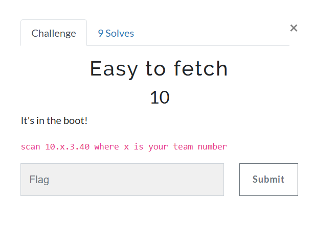
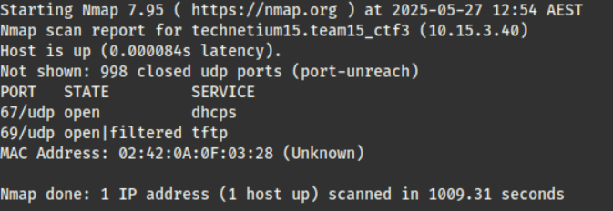
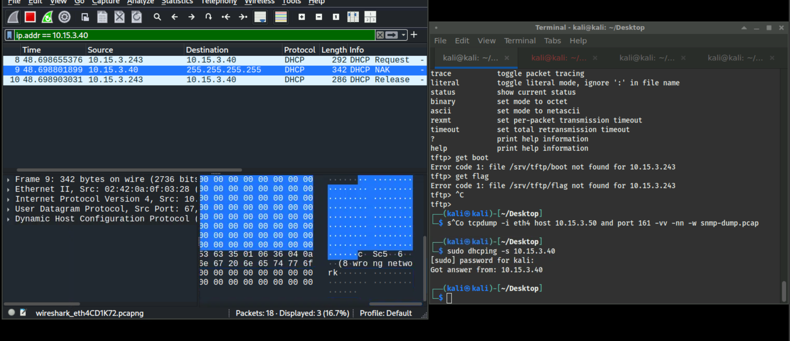
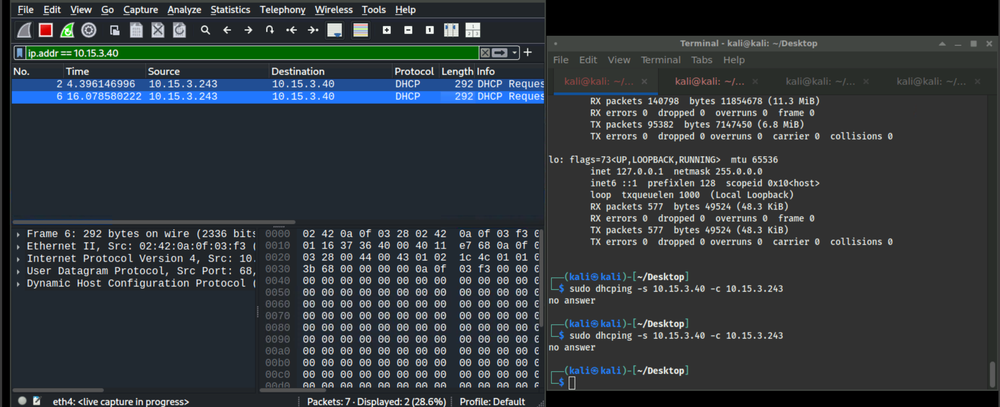

Easy to Fetch

At first, I began by scanning the ports like what I had done in the other challenges. However, it revealed nothing, so I scanned the top 1000 UDP ports instead.
nmap -sU --top-ports 1000 <ip>

From the output, the open ports are 67 and 69 — for DHCP and TFTP, respectively.
First, I tried to connect to the TFTP protocol and play around with it. Unfortunately, from the help menu of TFTP, we don't have the ls command. So I just tried guessing the name of the flag file.
Spoiler alert!! That didn’t work ._.
This made me hypothesize that the file name of the flag might be given by another protocol.

Next, I tried to use the DHCP service on the server by using the dhcping command to interact with it.
 
From both outputs above, these are my first attempts at using dhcping randomly, which in fact did not work. In the first image, I specified only -s, which is the server IP. In the second image, I specified both the server IP and client IP with -c.
Actually, in the packet captures from both images, there is a section about the boot file, which reminded me of the hint in the challenge description. However, neither attempt revealed anything about the boot file, since I used the protocol incorrectly.
By looking at the man page of dhcping, I found that the correct usage requires specifying both the MAC address and the IP related to it. So the correct command should be:
dhcping -s <server_ip> -c <client_ip> -m <mac_address>

After adding the MAC address, the protocol successfully responded with the assigned IP together with the boot file name. Now, I continued with my hypothesis — that the boot file name returned from the DHCP response is probably the name of the flag.
Then, I tried requesting this file from the TFTP server:

Luckily, this actually gave me the flag for the challenge.
Note to self
Funny Protocols
-
DHCP: An IP configuration protocol that dynamically assigns IP addresses.
Fun fact: DHCP replaced the old BOOTP protocol, meaning it also supports sending a boot file to diskless clients — the same boot file mentioned in the challenge description.
-
TFTP: A simple file transfer protocol that uses UDP for file transfer.